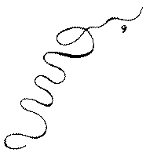
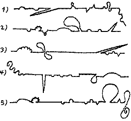

［注釈付きノンフレーム版を表示する］ ［注釈付きフレーム版を表示する］
『トリストラム、シヤンデー』
夏目漱石
今は昔し十八世紀の中頃英国に「ローレンス、スターン」といふ坊主住めり、最も坊主らしからざる人物にて、最も坊主らしからぬ小説を著はし、其小説の御蔭にて、百五十年後の今日に至るまで、文壇の一隅に余命を保ち、文学史の出る毎に一頁又は半頁の労力を著者に与へたるは、作家「スターン」の為に祝すべく、僧「スターン」の為に悲しむべきの運命なり、
さはれ「スターン」を「セルバンテス」に比して、世界の二大諧謔家なりと云へるは「カーライル」なり、二年の歳月を挙げて其書を座右に欠かざりしものは「レッシング」なり、渠（かれ）の機智と洞察とは無尽蔵なりといへるは「ギヨーテ」なり、生母の窮を顧みずして驢馬の死屍に泣きしは「バイロン」の謗（そし）れるが如く、滑稽にして諧謔ならざるは「サッカレー」の難ぜしが如く、「バートン」「ラベレイ」を剽窃する事世の批評家の認識するが如きにせよ、兎に角四十六歳の頽齢（たいれい）を以て始めて文壇に旗幟（きし）を翻して、在来の小説に一生面を開き、麾（さしまね）いで風靡する所は、英にては「マッケンヂー」の「マン、オフ、フヒーリング」となり、独乙（ドイツ）にては「ヒッペル」の「レーベンスロイフヘ」となり、今に至つて「センチメンタル」派の名を歴史上に留めたるは、仮令（たとい）百世の大家ならざるも亦一代の豪傑なるべし、
僧侶として彼は其説教を公にせり、前後十六篇、今収めて其集中にあり、去れども是は単に其言行相（あい）背馳して有難からぬ人物なる事を後世に伝ふるの媒（なかだち）となるの外、出版の当時聊（いささ）か著者の懐中を暖めたるに過ぎねば、固（もと）より彼を伝ふる所以（ゆえん）にあらず、怪癖放縦（かいへきほうしょう）にして病的神経質なる「スターン」を後世に伝ふべきものは、怪癖放縦にして病的神経質なる「トリストラム、シャンデー」にあり、「シャンデー」程人を馬鹿にしたる小説なく、「シャンデー」程道化たるはなく、「シャンデー」程人を泣かしめ人を笑はしめんとするはなし、
此書は始め九巻に分ちて天下に公にせられ、題して「トリストラム、シャンデー」伝及び其意見といへり、去れば何人にても此九巻の主人公は「シャンデー」といふ男にて、巻中細大の事、皆此主人公に関係ありと思ふべし、所が実際は反対にて、主人「シャンデー」は一人称にて、「余が」とか「吾は」とか云ふにも係はらず、中々降誕出現の場合に至らざるのみならず、漸く出産したかと思へば、話緒（わしょ）は突然九十度の角度を以て転捩する事一番、何時垂直線が地平線に合するやら、読者は只鼻の穴に縄を通されて、意地悪き牧童に引き摺らるゝ犢（こうし）の如く、野ともいはず山ともいはず追ひ立てらるゝ苦しさに、偖（さて）は「シャンデー」を以て此書の主人公と予期したるは、此方の無念にて著者の過（あやま）りにてはなかりき、と思ひ返すに至るべし、主人公なきの小説は、固より面白き道理なし、但「サッカレー」の「バニチーフェアー」許（ばか）りは、著者自らの云へる如く、此種の小説に属すべきものなれど、去りとて「シャンデー」の如く乱暴なるものにあらず、可憐なる「アミリヤ」、執拗なる「シャープ」、順良敦朴（とんぼく）なる「ドビン」より傲岸不屈の老「オスバーン」に至るまで、甲乙顕晦（けんかい）の差別こそなけれ、均しく走馬燈裏の人物にして、皆一点の紅火を認めて、此中心を廻転するに過ぎざれば、仮令（たとい）主人公なきにせよ、一巻の結構あり、錯綜変化して終始貫通せる脈絡あり、「シャンデー」は如何、単に主人公なきのみならず、又結構なし、無始無終なり、尾か頭か心元なき事海鼠（なまこ）の如し、彼自ら公言すらく、われ何の為に之（これ）を書するか、須（すべか）らく之を吾等に問へ、われ筆を使ふにあらず、筆われを使ふなりと、瑣談小話筆に任せて描出し来れども、層々相依り、前後相属するの外、一毫の伏線なく照応なし、篇中二三主眼の人物に至つては、固より指摘しがたからず、「シャンデー」の父は黄巻堆裏（こうかんたいり）に起臥して、また其他を知らず、叔父「トビー」（「リー、ハント」の所謂（いわゆる）親切なる乳汁の精分もて作り出されたる「トビー」）は園中に堡寨（ほうさい）を築いて敵なきの防戦に余念なく、其他には不注意不経済なる僧「ヨリック」あり、一瞥（いちべつ）老士官を悩殺せる孀婦（そうふ）「ウワドマン」あり、皆是巻中主要の人物なれども、彼等は皆自家随意の空気中に生息して、些（いささか）の統一なき事、恰（あたか）も越人と秦人が隣り合せに世帯を持ちたるが如く、風（ふう）する馬牛も相及ばざるの勢なり、嘗て聞く往事西洋にて道化を職業として、大名豪族の御伽（おとぎ）に出るものは、色々の小片を継ぎ合せたる衣裳を着けたるが例なりとか、「シャンデー」は此道化者の服装にして、道化者自身は「スターン」なるべし、
此道化者は此異様の書き振りを以て、電光石火の如く吾人の面目を燎爛（りょうらん）しながら、頗る得意となつて弁じて曰く、吾が数（しばし）ば話頭を転じて、言説多岐に渉るは、諸君の知る如く少しも不都合なき事なり、大英国の作家にて横道に入る事余の如く頻（しき）りなるはなく、外れた儘にて深入する事余の如く遠きはなし、されども家内の大事務大事件は、留守中にても渋滞なく裁断処理し得る様用意万端調はざるなしと、又曰く、余の話頭は転じ易し、されども亦進み易しと、吾人は其転じ易過ぎるに驚くのみ、進み易きに至つては焉（いずく）んぞ之を知らん、
此累々たる雑談の中にて、尤も著明なるは「ヨリック」の最期、「スラウケンベルギウス」の話、悽楚（せいそ）なる「ル、フェヴル」の逸事、噴飯すべき栗の行衛（ゆくえ）、等にて個々別々のものとして読む時は、頗る興味多けれど、前を望み後を顧みてある聯絡を発見せんとすれば、呆然として自失するの外なし、而も是作者最も得意の筆法にして、現に第八巻のある篇の如きは冒頭に大呼して曰く、天下に書物を書き始むるの方法は沢山あるべけれども、吾が考にてはわれ程巧者のものはなしと思ふ、啻（ただ）に巧者なのみならず、又頗る宗教的なりと思ふ、何故と問て見給へ、第一句目は兎に角自力にて書き下せど、第二句目よりは只管（ひたすら）神を念じて筆の之（ゆ）くに任じて其他を顧（かえりみ）ざればなりと、第一巻廿三篇に曰く、われ出鱈目に此篇を書かんと思う念頻（しきり）なり、因（よっ）て書き流す事下の如しと、下に出で来る事柄は大抵予想すべきのみ、かゝる著者なれば厳格なる態度と真面目なる調子とは、到底望むべからざるは勿論の事にて、現に「スターン」自身を代表せる篇中の人物と目せられたる「ヨリック」を写し出すには、左の言語を用ゐたり、
「ヨリック」時としては其乱調子なる様子を以て、厳粛を罵つて不埒の癖物（くせもの）と呼び、厳粛とは心の欠点を陰蔽する奇怪なる身体の態度なりてふ、昔し仏の才人某が下したる定義を崇拝し、願くは金字を以て此義を繍（ぬ）はん抔（など）不注意にも人に洩す事あり、
既に真面目を厭ふ以上は、泣かざる可らず、笑はざる可らず、中庸を避けて常に両端を叩かざる可らず、
「スターン」が書中には笑ふ可き事実（じつ）に多し、其尤も単簡なるものは、出来得べからざる事を平気な顔色にて叙述するにあり、例へば「ヨリック」の作れる説教を読めと命ぜられたる軍曹「トリム」が、如何なる身繕（みづくろい）して彼等の前に立ちしか、「スターン」事もなげに記して曰く、彼は体の上部を少しく前方に屈して立てり、此時彼の姿勢は地平面上に八十五度半゜の角度を画けりと、敢て問ふ半とは何処より割り出したる計算なるか、
次には無用の文字を遠慮なく臚列（ろれつ）して憚らぬ事なり、例へばＡ、Ｂ、Ｃ、Ｄ、Ｅ、Ｆ、Ｇ、Ｈ、Ｉ、Ｊ、Ｋ、Ｌ、Ｍ、Ｎ、Ｏ、Ｐ、Ｑ等の諸卿（しょけい）馬に騎して整列するを見るときは抔（など）いふが如く、何故ＡよりＱ十六字を妄（みだ）りに書き立てたるかは、奇を好む著者の外何人も推測し得ざるべし、
次に笑ふといはんよりは、寧ろ驚くといふ方適当なるべきは、常識の欠乏せる事なり、「トリストラム、シャンデー」を開きて先づ一巻より、二巻に至り順次に読了して九巻に至れば、其内に二枚の白紙あるを認め得べし、此二枚は巻末巻首の余白に非ずして、鼇頭（ごうとう）に第○○篇と記せるを見れば、明かに白紙を以て一篇と心得べしと云ふの意なるべし、心を以て tabula rasa に比したる哲学者あるを聞きぬ、未だ白紙を以て一篇となせる小説家を聞かず、之れ有るは「スターン」に始まる、而して「スターン」に終らん、
白紙は猶（なお）可なり興に乗じて巫山戯（ふざけ）るときは、図を引き線を画して、言辞の足らざるを説明する事さへ辞せず、「人間にして自由なる以上」はと「トリム」大呼して杖を揮ふ、其状左の如し、

「一巻より五巻に至るまで吾説話の方法は頗る不規則にして頗る曲折せり第六巻に至らば遂に直線たるを得べし今其経過の有様を曲線にて示せば左の如くなるべし」と、図あり之を掲ぐ、

「ウォルター、シャンデー」の奇想に至つては、真に読者をして微笑せしむべく、絶倒せしむべく、満案の哺（ほ）を噴せしむべし、「ウォルター」は人の姓氏を以て吾人の品性行為に大関係あるものとせり、其説に曰く「ジヤック」と「ヂック」と「トム」とは可もなし不可もなし、中性なり、「アンドリユ」に至つては代数に於る「マイナス」的性質を有す、０よりも不善なり、「ウイリアム」は中々善き名なり、「ナムプス」は云ふに足らず、「ニツク」は悪魔なり、然れどもあらゆる名字中にて最も嫌ふべく賤しむべきは、「トリストラム」なりと、時としては非常の権幕にて、相手を詰問すらく、古来「トリストラム」なる人にて、大事を成したるものあるか、有るまじ、「トリストラム」！ 出来る筈がないと、「ウォルター」又古書を愛読す、其妻懐胎して蓐中（じょくちゅう）に臥する時、頻りに虫喰みたる産学書を参考熟読して以て其蘊奥（うんおう）を究め得たりとなす、其説に曰く、胎内の小児を倒（さかさ）まにして足より先に引き出す時は、前脳後脳の為に圧迫せらる事なくして、後脳の方前脳に窘搾（きんさく）せらるゝに過ぎざれば、危険の虞（おそれ）なくして頗る安全なりと、是より種々研究の末、子を生むに最も大丈夫なる方法は、母の腹部を立ち割るに在りと断定し、数週間色々屈托して考へたる後、或日の午後遂に妻君に腹部切開の法を物語りけるに、無論賛成と思いし産婦は見る／＼顔色を変じて死灰の如くなりければ、残念ながら切角の手術も施こすに由なくして已みぬ、
「トビー」の真率にして無智なるに反して、「ウォルター」の独りして学者めかしたる、亦読者をして屡（しばしば）失笑せしむるに足るものあり、「ウォルター」の子外国に死して、其報家に達するや、「ウォルター」其弟「トビー」を顧みて、左も勿体らしく説き出して曰く、「是（これ）免る可らざるの数なり、「マグナ、カータ」の第一条なり、変ず可らざる議会の法なり、若（も）し我子にして死なざれば、其時こそ驚きもすれ、死したりとて驚く事やはある、帝王も公子も死なねばならぬが浮世なり、死は天に対して借銭を払ふに過ぎず、租税を納むるに異ならず、永久に我等を伝ふ可き筈の墓碣（ぼけつ）さへ、紀念碑さへ、此租税を払ひつゝあり、此借銭を返しつゝあるではなきか、富の力に因り、技術の力に因りて成れる、世界の最大紀念碑三角塔（ピラミッド）さへ、頭が剥げて地平線上に転がるではなきか、国も郡も都も町も皆悉（ことごと）く進化するではないか」進化といふ語を聞きて叔父「トビー」は煙管（きせる）を下に置きて、「ウォルター」を呼び留めぬ「ウォルター」は直ちに正誤したり、「いや変化の意味ぢや変化といふ積りぢや」、「進化では通じません様で、少しも分らんと思ひます」「然し此大切な処で、横合から口を入れる抔は、猶々分らんではないか、後生だから、頼むから、此肝心の処丈（だけ）遣らして呉れ」叔父は再び煙管を啣（ふく）みぬ、「「トロイ」は何処にあるか、「シーブス」「デロス」乃至（ないし）は「バビロン」「ニネヴエ」、太陽の照す処で最も美しかりし国は皆亡びて、残るは空しき名のみではないか、其名前さへ様々に綴り損ねて、遂に忘れられるであらう、聞けや「トビー」、世界其物も遂には破壊する事あらん、われ亜細亜（アジア）より帰る時、「レヂナ」より海に航して「メガラ」へ渡る時、（いつ左様な事が有つたかと、「トビー」は窃かに不審なり、）眦（まなじり）を決して周囲の地を見たるに、「レヂナ」は後に在り、「メガラ」は前にあり、「ピレウス」と「コリンス」は左右にあり、繁栄無双と称せられたる通邑（つうゆう）大都は、落寞として往時の光景を存せず、嗚呼嗚呼（ああああ）かゝる壮厳のものすら、土中に埋没して眼前に横（よこた）はるを、一人の子に先立れたりとて、何条（なんじょう）我心を乱すべき、汝も男ならずや、男なりと独り己れに語りたる事さへありき」質直なる「トビー」は、此感慨は全く「ウォルター」自身の感慨にて、昔し「サルピシアス」が「タリー」を慰むる為に書ける手紙を暗誦して居る事とは、夢にも知らねば、やがて煙管の先にて、「ウォルター」の手を突つきながら問へり、「全体それは何時頃の話で、千七百何年頃で」「千七百何年でもない」「そんな事が有るものですか」「ヱヽ分らぬ奴だ紀元前四十年の事だ」
「ウォルター」は所謂「ベーコン」の学者にして愚物（Learned Ignorance）なるもの、「トビー」即ち「グレー」の所謂無智にして幸福ならば、賢ならんと欲するは愚なり（Where ignorance is bliss, / 'Tis folly to be wise）と云へるに庶幾（ちか）からんか、
去れども此順良なる無邪気なる「トビー」すら、一度「スターン」の筆に上れば、一癖持たねば済まぬ事と見えて、此人日夕（にっせき）身を築城学の研究に委ねて、中々其道の達人とぞ聞えし、「マルタス」は更なり、「ガリレオ」より「トリセリアス」に至るまで、一として通暁せざるはなく、精密なる弾道は抛物線（ほうぶつせん）にあらざれば双曲線なる事、截錐（せっすい）の第三比例数の弾道距離に対する比例は、投射角を倍したる角度の正弦と全線との比例の如しといふ事抔（など）、皆彼が研鑽究明し得たるの結果なりとぞ、偖（さて）も此男の科学的思想は、「ウォルター」の哲学的観念と相反映して、何（いず）れ劣らぬ学者なるこそ頼もしけれ、「ウォルター」の時間を論ずる条に曰く、時は無限の中にあり、無限を解せんには時を解せざる可らず、時を解せんには沈思黙坐して満足なる結果を得る迄、吾人が時間に対して如何なる観念を有するか、と究明せざる可らずと、此弟にして此兄あり双絶（そうぜつ）といふべし、
「スターン」の諧謔は往々野卑に流れて上品ならざる事あり、夫（そ）の「フューテトリアス」と栗の話しの如きは其好例なりとす、「或る学者の一群何事かありて一堂に会食しける折、如何なる機会にや、卓上に盛りたる焼栗の一個、忽然ころ／＼と転げて、真倒（まっさかさ）まに「フューテトリアス」の洋袴（ヅボン）の穴に躍り込みぬ、此穴は「ジョンソン」の英字典を何返捜しても見出し得べからざる穴にて、上等社会に在つては、一般の習慣として、「ジェーナス」の神扉の如く、少なくとも平時は開放厳禁の場所なりき、然る処最初の二十秒程は、此落栗微温を先生の局部に与へて、彼が愉快なる注意を此所に引くに止まりしが、漸々熱度増進して、数秒の後には既に普通一般の楽しき心地を通過し、果は非常なる勢を以て、猛烈なる熱気と変化しければ、先生の愉快は俄然として劇性の苦痛となり了ぬ、此時「フューテトリアス」の精神は、彼れの思想、彼れの観念、彼れの注意力、判断力、想像力、沈考力、決行力、推理力と共に、一度に体の上部を去つて、局部の急に赴きければ、彼の脳中は、空しき事我が財嚢に異ならず」、此滑稽は野卑なれども無邪気にして頗る面白し、仮令（たとい）学校の教科書としては不適当なるも、膝栗毛七変人抔よりは反（かえ）つて読みよき心地す、蓋（けだ）し「スターン」集中に在つて諧謔の佳なるものか、英語を解するの読者之を取つて、下に掲ぐる駄洒落と比較せば、優劣自ら判然たらん、「愛といふ情をいろは順で並べたらば斯（こう）も有（あろ）うか」、
Agitating,
Bewitching,
Confounded,
Devilish affairs of life; --the most
Extravagant,
Futilitous,
Galligaskinish,
Handy-dandyish,
Irancundulous,
(there is no K to it) and
Lyrical of all human passions: at the same time the most
Misgiving,
Ninnyhammering,
Obstipating,
Pragmatical,
Stridulous,
Ridiculous
是を見て面白しと感ずる人もあるべし、我は唯其労を謝して已（や）みなん、
以上は「スターン」の諧謔的側面なり、善く笑ふものは善く泣く、「スターン」豈（あに）涙なからんや、「トリストラム、シャンデー」を読んで第一に驚くは、涙と云ふ字の夥多（かた）なるにあり、「尊むべき悦喜の涙は、叔父「トビー」の両眼に溢れぬ」といひ「涙は彼の両頬を伝りぬ」といひ、「涕涙滂沱（ぼうだ）たり」といひ、「涙潸々（さんさん）として拭ふに暇（いとま）あらず」といひ、閲して数葉を終らざるに、義理にも泣かねばならぬ心地となるべし、而して其最も泣かざる可らざる所は、九巻の中二三ケ所程あるべく、夫の「トビー」の旧友「ル、フェヴル」の死を写せる一段の如きは、種々の文学書に引用せられ、頗る有名なるものなり、されども余が最も感じたるは、「ヨリック」法印遷化（せんげ）の段なり、此僧病んで将（まさ）に死なんとする時、其友人に「ユージニアス」なる者ありて、訣別の為めとて訪ひ来る、様々慰問の挨拶などありたる後、病僧は左の手にて、漸くにわが被れる頭巾を脱ぎ、願くは愚僧の頭に御目を留められよと云ふ、何事の候ぞ、別段変りたる様子も無きにと答ふるに、否とよ、愚僧の頭は※（くぼ）みて候、最早物の役に立つべしとも存じ候はず、卑怯なる……等は、暗（やみ）に乗じて手痛くも愚僧を打ち据へ、御覧の通り此頭を曲げ候、斯くなる上は仮令（たとい）天より大僧正の冠が、霰の如く繁く降るとも、到底某（それがし）の頭に合ふものは一つも有之間敷（これあるまじく）と存候と、嘆息の言さへ今は聞き取れぬ位なり、あはれ無邪気なる「ヨリック」よ、汝が茶番的なる末期の述懐は、吾が汝に対する愛憐の情をして、一瞬の間に無量ならしめぬ、吾汝が言を聞て微笑せり、されどもわが微笑せるは、汝の為に万斛（ばんこく）の涙を笑後に濺（そそ）がんが為なり、「ヨリック」は今頭を傷けらるゝの憂なく、静かに其墓中に長眠するならん、「ユージニアス」が彼の為に建てたる粗末なる白大理石の碑面には、「嗚呼（ああ）憐む可き「ヨリック」」の数字を刻せるのみと云ふ、
「スターン」「ヨリック」の死を叙する時異様の筆法を用ゐて曰く、「天命は忽（たちま）ちにして復（また）去りぬ、靄（モヤ）は来りぬ、脈は鼓動しぬ、止まりぬ、又始まりぬ、激しぬ、再び止まりぬ、動きぬ、後は？ 書くまじ」、かゝる筆法は、時々「ヂッキンス」に於て之を見る、好悪は読者に一任するの外なし、（文体の事は茲（ここ）には論ぜざる積りなれど序（ついで）なれば一言す）
「スターン」の神経質なるは、前に述べたる批評にて大概は言ひ尽したる積りなれど、猶一例を挙げて其局を結び、夫より其文章に就て一言すべし、
「トビー」一日、食卓に着き、晩餐の箸を下さんとせる時、何処より飛び来りてか、一匹の蠅は無遠慮にも、老士官の鼻頭に留りぬ、逐（お）へば去りぬ、去るかと思へば又来りぬ、紙の如き両翼を鳴して、ぶん／＼鼻の端を飛び廻りて、煩はしき事云はん方なければ、流石（さすが）の「トビー」も面倒と思ひけん、大手を広げて此小動物を掌中に攫（かく）し去るよと見えしが、殺しもやらず徐（おもむ）ろに窓を開き、懇（ねんご）ろに因果を含めて放ち遣る、辞に曰く、須（すべか）らく去れ、吾れ敢て爾（なんじ）を殺さじ、爾が頭上の一髪だも傷けじ、去れや可憐の小魔、吾れ焉（いずく）んぞ爾を殺さん、蒼天黄土爾（なんじ）と我とを容れて余りありと、放たれたる蠅は感泣再生の恩を謝して去りしや否やを知らず、老いたりと雖（いえども）軍籍に列する身をもちながら、一匹の蠅を傷くるだに忍び得ざる「トビー」を描出したる「スターン」の心情こそ、冷然として其母の困苦を傍観したる心とも見えね、「ヂスレリー」が作家に二生ありと云へるは去る事ながら、蠅を愛して母に及ばざる此坊主の脳髄ほど、病的神経質なるはあらじ、
「スターン」の文体に就ては、諸家の見る所必ずしも同じからず、「マッソン」は彼が豊腴（ほうゆ）なる想像を称して、其文体に説き及ぼして曰く、彼の文章は精確にして洗錬なるのみならず、嫺雅（かんが）優美楚々人を動かす、珠玉の光粲（さん）として人目を奪ふが如しと、「トレール」の意見は之と異にして、「スターン」は唯好んで奇を衒（てら）ひ怪を好むに過ぎず、文体といふ字義を如何に解釈するとも、彼は自家の文体を有する者にあらずといへり、此二人の批評は相反するが如くなれども、共に肯綮（こうけい）を得たるものにて、実際「スターン」の文章は錯雑なると同時に明快に、怪癖なると共に流麗なり、単に一句を以て一頁を填（う）めけるかと思へば、一行の中に数句を排列し、時としては強て人を動かさんと力（つと）め、時としては又余り無頓着に書き流す、今其長句法の一例を左に訳出すべし、意義若（も）し明瞭ならずんば是「スターン」の罪なり訳者の咎にあらずと思ひ玉へ、「察する所此女は四十七歳の時四人の小児を残して其夫（おっと）に先き立たれて不幸の境遇に陥りしものと見ゆれど固より賤しからぬ風采と沈着なる態度を具へたる上己（おの）が身の貧しき故且（かつ）は其貧しきに伴ひて万（よろず）控へ勝なる故村内の者は誰とて憐みの心を起さゞるはなきが中にも旦那寺の妻君は殊の外の贔負にて幸い此界隈六七里の間には……口でこそ六七里其実（そのじつ）雨が降つて道の悪い時や殊には闇の夜で先が見えぬ時抔は十四五里にも相当するが其より近くには産婆と云ふものは一人も居らねば詰（つま）り此村には産婆は来らぬと申しても差支（さしつかえ）なき程の不便を檀家の者共は数年来感じつゝありし折柄なれば此女に産婆学の一端でも稽古させて村中に開業せしめなば当人は無論の事村の者も嘸（さぞ）都合善からんと考へぬ」又短句法の例は下の如し、「父は倚子を掻（か）い遣りぬ、立ちぬ、帽子を被りぬ、戸の方に進む事四歩なり、戸を開く、再び戸を閉づ、蝶※（ちょうつがい）の毀れたるを顧みず、席に復せり云々」一篇の文章も、時としては左まで長からぬ単句にて成る事あり、例下の如し、「吾父独語して曰く、恩給や兵士の事を彼是（かれこれ）云ふべき場合であるか」前もなく後もなし、只此一句則ち一篇を組織す、時としては妄（みだ）りに擬人法を用ゐて厭味多き事あり、例へば「静粛は無声を随へて幽斎の中に入り来り、徐（おもむ）ろに彼等の上衣を脱して「トビー」の頭を蔽ひ、無用心は優柔無頓着なる顔色にて、其傍に坐せり」と云ひ或は「日に焦（や）けたる労動の娘は群中より出でゝ余を迎へたり」と云ふが如し、斯様な書き方は、韻文にても妄りに使ふべからざる者にて、現に「カメル」が
"Hope for a season bade the world farewell,
And Freedom shrieked as Kosciusko fell!"
と云へる句の如きは、大に評家の嘲笑を買へりとさへ聞く、人は兎（と）にあれ、余は是等の文字を以て甚だ厭味あるものと考ふるなり、
「スターン」の叙事は多く簡潔にして冗漫ならず、去れども一度此法度を破るときは、※々（びび）叙し来つて其繊細なる事、殆んど驚くべし、「トリストラム」出産の当時、婦人科専門の医師「スロップ」と云へるが、医療器械の助を藉（か）りて生児を胎内より引き出したる為め、彼の鼻は無残にも圧し潰されて、扁平なる事鍋焼の菓子に似たりと、聞くや否や、父「シャンデー」は悲哀の念に堪（たえ）ず、倉皇（そうこう）己れが居室に走り入りて、慟哭したる時、彼の態度は如何に綿密なる筆を以て写し出されたるかを見よ、「床上に臥したる吾父は、右手の掌を以て其額及び眼の大方を蔽ひながら、肱の弛（ゆる）むに任せて漸々其顔を低（た）れて鼻の端蒲団に達するに至りて已みぬ、左手は臥床の側らに力なくぶら下り、戸帳の陰より少しく見（あら）はれたる便器の上に倚り、左足を彎曲して体の上部に着け、右足の半分を寝台の上より垂れて其角（カド）にて脛骨を傷けながら、毫も痛を感ぜざるものゝ如く、彫りつけたらんが如き悲みは彼が顔面より溢れ出ん許りなり、嘆息を洩す事一回、胸廓の昂進するもの数たび、然れども一言なし」
「スターン」の剽窃を事とせるは諸家定論あり、こゝには説くべき必要もなく、又必要ありとも参考の書籍なければ略しぬ、只其笑ふ可く泣く可く奇妙なる「シャンデー」伝と、其文章に就て概評を試むる事斯（かく）の如し、
「スターン」死して墓木（ぼぼく）已に拱（きょう）す百五十年の後日本人某なる者あり其著作を批評して物数奇（ものずき）にも之を読書社会に紹介したりと聞かば彼は泣べきか将（は）た笑ふ可きか（明治三十年二月九日稿）
初出：『江湖文学』（江湖文学社）第4号
1897（明治30）年3月5日発行
底本：夏目金之助『漱石全集 第十三巻』岩波書店
1995（平成7）年2月22日初版第1刷
電子テキスト入力：内田勝（uchida.masaru.m7@f.gifu-u.ac.jp）
2002年12月4日公開
このページは、ウェブサイト『電脳空間のローレンス・スターン』（https://www1.gifu-u.ac.jp/~masaru/Sterne-J.html）の一部です。
●表記・画像について
＊本文中のルビについては、底本に従いました。ただし底本では『漱石全集』編集部による現代仮名遣いのルビを〔 〕に入れて原文のルビと区別していますが、この電子テキストでは区別していません。「洋袴」に「ヅボン」とルビが振られているところ、「靄」に「モヤ」とルビが振られているところ、および「角」に「カド」とルビが振られているところだけが、漱石の原文のルビです。
＊本文中の／＼は、二倍の踊り字（「く」を縦に長くしたような形の繰り返し記号）を表わしています。
＊本文中の※は、底本では次のような漢字（JIS外字）が使われています。
＊本文中の日本語の斜体字は、底本では傍点「ヽ」によって強調されている語句を表わしています。一回だけ使われている白丸傍点「○」については、強調された語句を斜体字にするとともに語句の後に「゜」を付けて表わしました。なお、英語の斜体字は底本でも斜体字です。
＊本文中に挿入された曲線の画像は底本のものではなく、スターンの『トリストラム・シャンディ』初版に挿入された曲線の画像をもとに、おそらく漱石自身が描いたと思われる底本の画像に合わせてスターン版にはない数字を書き入れるなど、私（内田）が若干の変更を加えたものです。もとのスターン版の画像は、私が管理するウェブサイト『Tristram Shandy Online』から取りました。
『電脳空間のローレンス・スターン』に戻る